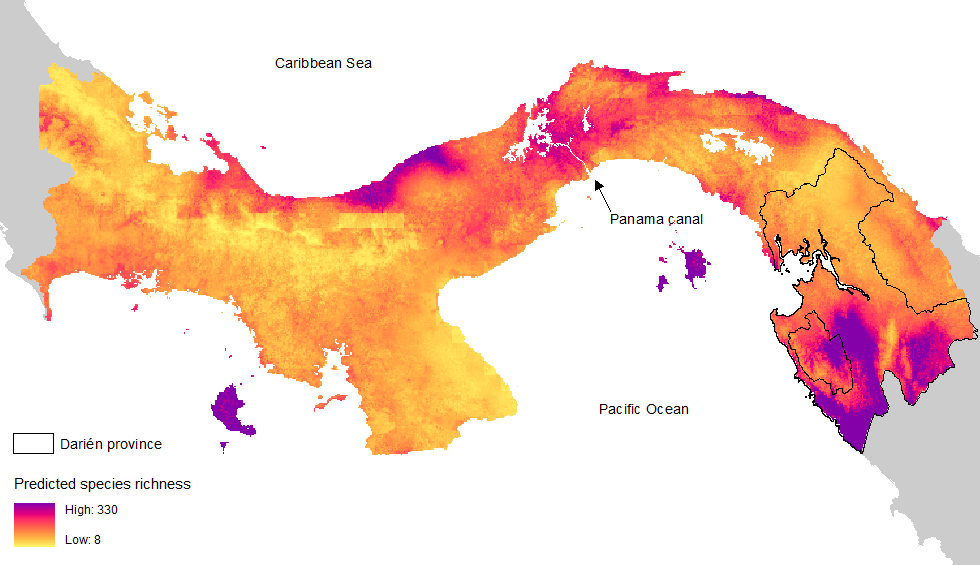

Plant Biodiversity
Developing baseline nationwide biodiversity estimates and species distributions for >6000 plant species
Project description
Estimating alpha-diversity, community composition, and species distributions provides an important baseline to understanding the effects of global change for such impacts as biodiversity loss and the erosion of ecosystem services. Here, we provide the most advanced estimate of nationwide plant biodiversity in Panama. To do so, we integrate data on species sightings (S), survey data (S), and a bias-adjustment kernel (BaK) based on environmental and species trait information (S2BaK species distribution model). To explore the distribution of species across Panama using S2BaK predictions click here.
The most common approach, using species sightings alone underestimated occurrences by ~4000% on average. Survey-only analyses performed less well on validation sites (AUC=0.81), as was not able to extrapolate to the >4500 species absent from the survey records. In contrast, the S2BaK substantially outperformed both, with higher AUC (AUC =0.97) and more than twice the explanatory power based on validation sites (deviance explained = 47%). Further, S2BaK had no obvious systematic underestimation, and could be applied to the broader set of species (>6000). This arguably provides the most advanced estimate of nationwide plant biodiversity in Panama.
For more information on the codebase, see https://github.com/PRISM-research/s2bak/

Figure: Species richness of plants across Panama, integrating various data sources and environmental and species trait information.
Project leads: Brian Leung, Emma J. Hudgins, Anna Potapova, Maria C. Ruiz-Jaen
Publications: Leung, B., Hudgins, E. J., Potapova, A., and Ruiz‐Jaen, M. C. 2019. A new baseline for countrywide α‐diversity and species distributions: illustration using >6,000 plant species in Panama. Ecological Applications.
https://doi.org/10.1002/eap.1866.